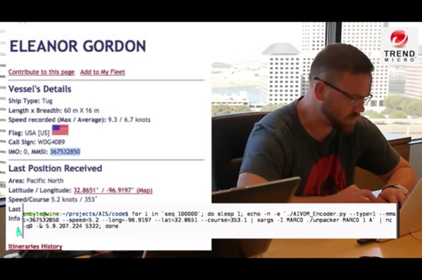

10.18.2013 12:26
Google Maps Engine QGIS plugin
Ujaval just released the Google
Maps Engine Connector for QGIS (>= 2.0)!
I got to help out with code reviews, which was a blast! You can check out the code here:
https://github.com/googlemaps/mapsengine-qgis-connector
I got to help out with code reviews, which was a blast! You can check out the code here:
https://github.com/googlemaps/mapsengine-qgis-connector
10.17.2013 09:43
AIS hack in a box is not an AIS hack
While I think this is a nice
demonstration, it is most definitely NOT an AIS hack. I'm not
saying that AIS is in any way secure (unless maybe you talk about
blue force encrypted messages). However, this is a nice example of
why you don't want to have totally open ports on your server
accepting random data. Okay, so there are some cases where
accepting data on a port can be sort of a good idea, but this is
not one of them. You can shove any AIS message you craft at the
marinetraffic.com server and it will process it and add it to the
map. Yes, if there was a signature component to AIS, these messages
could be cryptographically rejected, but that's a separate issue.
If marinetraffic had a way to vet people and only allowed vetted
people to send messages to the server (e.g. using ssh with a list
of known ssh public keys), then this attack is dead, but AIS would
still be the same old swiss cheese. You just would either have to
spend some work to trick marine traffic that you are a good guy or
go near a receiver and transmit your attack packets. The later is
trivial. Also, if marinetraffic payed attention to which receiver
the packet came from, the location, timestamps (no, they don't take
a receiver timestamp), receive strength and direction, then they
would have a chance to filter some attacks, but again, there would
be plenty of attacks still on the table.
This attack does have merit on grounds that these two guys did not mention. First, Iceland's Coast Guard runs a control station that has to allow uncleared people to work in it. Therefore, they can't show the NATO EU AIS feed in the room. To have vessel traffic up, you guessed it, they use marinetraffic.com. So Iceland's Coast Guard is vulnerable to this trouble because they trust a website that has no measure of security.
Second, the USCG sends messages for NAIS without encryption. You could easily craft a man-in-the-middle attack with any consumer of NAIS data and inject or remove messages at will. No, the packets aren't raw NMEA, but they are just zlib compressed and I saw nothing in the code that checks the validity of these messages. I just ran a java decompiler on AISUser. Note that this was when I found out that they are using the unix ls command to get the inode of the current directy for the authentication key for an ais server. Why didn't they just use OpenSSH and have users send them their public key or use one of the many other easy ways to do this cleanly?
This means that the ERMA disaster service that I helped build is susceptible to this mode of attack. There is nothing that the ERMA team can do to prevent the attack and it may be hard to detect if done carefully.
I believe the upstream sending of messages to the NAIS aggregation is equally weak and if you inject there, you could hit all of the USCG and any of their NAIS customers.
Thanks to gcaptain for posting with a link to this video: Researchers Discover Serious Security Vulnerabilities to AIS Data (but I would suggest a different title)
Could you build a very secure system to do what AIS is designed to do? Yes, but you should just throw out all of the AIS standards out there and only use them as a source of use cases. I'd call it something totally different because it would have little relationship to current AIS.
Update 2013-10-18: This made it to the BBC: Ship trackers 'vulnerable to hacking', experts warn By Dave Lee which has quotes from Lloyds.
The hack described just used a laptop, so I'm not sure how this cost 600 euros. This was just sending UDP packets over the internet, so I don't see any need for extra hardware (I'm assuming you already have a computer).
As for pirates, I don't see much evidence for the use of AIS. They go out and attack what ever they see, which includes warships. Their boats are often barely afloat. There is no need for AIS when a constant stream of targets goes by. And socat/netcat is free open source software.

This attack does have merit on grounds that these two guys did not mention. First, Iceland's Coast Guard runs a control station that has to allow uncleared people to work in it. Therefore, they can't show the NATO EU AIS feed in the room. To have vessel traffic up, you guessed it, they use marinetraffic.com. So Iceland's Coast Guard is vulnerable to this trouble because they trust a website that has no measure of security.
Second, the USCG sends messages for NAIS without encryption. You could easily craft a man-in-the-middle attack with any consumer of NAIS data and inject or remove messages at will. No, the packets aren't raw NMEA, but they are just zlib compressed and I saw nothing in the code that checks the validity of these messages. I just ran a java decompiler on AISUser. Note that this was when I found out that they are using the unix ls command to get the inode of the current directy for the authentication key for an ais server. Why didn't they just use OpenSSH and have users send them their public key or use one of the many other easy ways to do this cleanly?
This means that the ERMA disaster service that I helped build is susceptible to this mode of attack. There is nothing that the ERMA team can do to prevent the attack and it may be hard to detect if done carefully.
I believe the upstream sending of messages to the NAIS aggregation is equally weak and if you inject there, you could hit all of the USCG and any of their NAIS customers.
Thanks to gcaptain for posting with a link to this video: Researchers Discover Serious Security Vulnerabilities to AIS Data (but I would suggest a different title)
Could you build a very secure system to do what AIS is designed to do? Yes, but you should just throw out all of the AIS standards out there and only use them as a source of use cases. I'd call it something totally different because it would have little relationship to current AIS.
Update 2013-10-18: This made it to the BBC: Ship trackers 'vulnerable to hacking', experts warn By Dave Lee which has quotes from Lloyds.
... "The spoofing would immediately be identified by [Lloyd's List Intelligence] as a warp vessel," ...That assumes that Lloyd's is seeing the input that marinetraffic.com, which is a separate country. It would be possible to do an injection of fake data that would be extremely hard to detect. e.g. If you have a transmitter near a ship, send out noise to corrupt that ships packets. You only have to detect the mmsi portion and then start noise to corrupt the packet's tail. Then, transmit on a different slot, and slowly change the location of that ship. There are enless variations that would be hard for anyone to catch.
The hack described just used a laptop, so I'm not sure how this cost 600 euros. This was just sending UDP packets over the internet, so I don't see any need for extra hardware (I'm assuming you already have a computer).
As for pirates, I don't see much evidence for the use of AIS. They go out and attack what ever they see, which includes warships. Their boats are often barely afloat. There is no need for AIS when a constant stream of targets goes by. And socat/netcat is free open source software.
10.14.2013 10:33
AIS vulnerabilities
Thanks to Jordan for pointing me to
this article. I'll be curious to see if I got all of the weaknesses
that these folks say they will be using. Yes, AIS is swiss cheese
when it comes to security and integrity. Back in 2006/2007, the
USCG directly asked me not to talk about these issues, but that
makes no sense. Anyone with a Class A device or a software defined
radio can make a mess of things with little effort - everything
from denial-of-service (DOS), to changing the frequencies used by
some shipts, making fake announcements, specifically stepping on
others' transmisssions, send fake dgps corrections, and the list
goes on. Life is already painful enough if you look at the issues
that are out there without any black hats adding to the mix.
Researchers Highlight Security Vulnerabilities In Ship-Tracking System
AIS Security and Integrity
Most of those weaknesses should be immediately obvious to anyone with an undergraduate CS background. This is what happens when you have non-practitioners, aka mariners, lawyers, electrical engineers, and bureaucrats design a network message specification instead of just writing out the use cases. Toils of AIS by Raymond and Schwehr tries to give a blunt description of this.
A challenge to the reader of my blog: Given 30 minutes and no prior knowledge of AIS, look at ITU 1371-4 and IMO Circ 289 and you should be able to come up with 10 really nasty things to do with AIS. The Spanish have mentioned in public that they have practiced making ghost fleets with AIS in preparation for war time deceptions.
Original article: Captain, Where Is Your Ship [trendmicro.com] That post shows just how easy it is to send random UDP packets to open services and send them crap. It's like turtle graphics / logo in AIS packets.
Researchers Highlight Security Vulnerabilities In Ship-Tracking System
... At the upcoming Hack in the Box Security Conference in Malaysia, a team of security researchers are preparing to demonstrate how an attacker could hijack AIS traffic and perform man-in-the middle attacks that enable them to turn the tracking system into a liability. ... According to Trend Micro's Kyle Wilhoit, one of the researchers who worked on the project, says the attacks can be broken up into two categories: those that target the AIS Internet providers that collect and distribute AIS information, and those that target flaws in the actual specification of the AIS protocol used by hardware receivers in all of the vessels. Without getting too deep into the vulnerabilities ahead of the presentation, which is slated for Oct. 16, Wilhoit explains that the upstream providers fail to authenticate AIS sentences coming from ships. "I could go out, and I could pretend to be a boat, and they don't even fact-check it," he says. "They don't look at, OK ... is this AIS sentence actually a boat? They don't check any of that. So it's all accepted as is. It's accepted as true." ...Back in November of last year, I finally got brave enough to post my white board summary of AIS weaknesses:
AIS Security and Integrity
Most of those weaknesses should be immediately obvious to anyone with an undergraduate CS background. This is what happens when you have non-practitioners, aka mariners, lawyers, electrical engineers, and bureaucrats design a network message specification instead of just writing out the use cases. Toils of AIS by Raymond and Schwehr tries to give a blunt description of this.
A challenge to the reader of my blog: Given 30 minutes and no prior knowledge of AIS, look at ITU 1371-4 and IMO Circ 289 and you should be able to come up with 10 really nasty things to do with AIS. The Spanish have mentioned in public that they have practiced making ghost fleets with AIS in preparation for war time deceptions.
Original article: Captain, Where Is Your Ship [trendmicro.com] That post shows just how easy it is to send random UDP packets to open services and send them crap. It's like turtle graphics / logo in AIS packets.
10.05.2013 23:10
geeking out with programming languages
I'm on vacation. The mountain bike
just got a tune up. And then I read
What's the Best Way for a Programmer to Learn a New Language?
(note that the link takes you directly to James Williams' entry).
So then I went and did
Languages that I never want to see again: fortran*, basic*, ada, ml, Tcl/Tk, Verilog, AML, perl, awk/sed, Karol the F***ing Robot, php, csh, DOS batch files, etc.
Then there are the "what should I know?" languages... dart, pl/sql, m4 etc.
And the of course I know... GNU make, bash, lex/flex/yacc/bison, some assembly, etc. etc
In the "meh" catagory (aka I just don't care): cobol, groovy, rust, chicken, guile, logo, scheme, Objective C, and so on.
//en.wikipedia.org/wiki/List_of_Hello_world_program_examples
sigh. my overloaded brain is feeling soggy.
Note 2013-10-14: Trying out // and dropping the http: from the wikipedia link. I've been told that this is better?!?!
fink install erlang-otp fink install swi-prolog fink install nodejs fink install lua52 fink install haskell-platform fink install go # Yeah! some beat me to packaging itAnd then I remembered that I want to be working on my JavaScript skillz. Then I remembered emacs lisp and Xah's notes. Then I remembered that I want to break out some java again. Oh, and I meant to setup go in fink. Cause one of my projects has go in it thanks to Francesc. Oooh, and rhino needs to get forward ported. All that and I really need deep into IPython, Scipy and Pandas. Oh and Judd had some killer examples of looking at the assembly generated by various tiny C++ programs so you can see the difference (or lack thereof) in the resulting assembly from for(int i=0; i<10; i++) {} or for(int i=0;i<10;++i) {} and int i=0; while(i<10) {i++;}. Oh oh oh! I need to learn ruby so that I can work with Chef and/or Puppet (and Les think's ruby is "epic"). My SQL is okay, but really would be worth digging deaper.
Languages that I never want to see again: fortran*, basic*, ada, ml, Tcl/Tk, Verilog, AML, perl, awk/sed, Karol the F***ing Robot, php, csh, DOS batch files, etc.
Then there are the "what should I know?" languages... dart, pl/sql, m4 etc.
And the of course I know... GNU make, bash, lex/flex/yacc/bison, some assembly, etc. etc
In the "meh" catagory (aka I just don't care): cobol, groovy, rust, chicken, guile, logo, scheme, Objective C, and so on.
//en.wikipedia.org/wiki/List_of_Hello_world_program_examples
sigh. my overloaded brain is feeling soggy.
Note 2013-10-14: Trying out // and dropping the http: from the wikipedia link. I've been told that this is better?!?!
10.02.2013 09:45
Oddly names NOAA bathymetry grids
The US government is shut down, so I
can't tell if these have been corrected, but here are some samples
of the 47 NOAA BAG grids that do not match the established naming
convention. These are all from http://surveys.ngdc.noaa.gov/mgg/NOS/coast/
D00001-D02000/D00168/BAG/D00168_UTM02_MB_4m_MLLW_1of5.bag # UTM02? F00001-F02000/F00583/BAG/F00583_EastBranch_MB_50cm_MLLW_1of6.bag.gz # EastBranch? F00001-F02000/F00586/BAG/F00586_MB_1m_NGVD29_1of1.bag.gz # NGVD29 F00001-F02000/F00596/BAG/F00596_MB_1m_HRD_1of1.bag.gz # HRD? H10001-H12000/H11348/BAG/H11348_Combined_20m_MLLW_1of1.bag.gz # Combined placement H10001-H12000/H11384/BAG/H11384_2m__MLLW_1of1.bag.gz # __ H10001-H12000/H11407/BAG/H11407_50cm_MLLW_4oif7.bag.gz # oif -> of H10001-H12000/H11478/BAG/H11478_50cm_MLLW_1of13_A.bag.gz # _A H10001-H12000/H11640/BAG/H11640_MB_1m_awois_MLLW_2of3.bag.gz # awois H10001-H12000/H11849/BAG/H11849_Office_4m_MLLW_3pf4.bag.gz # pf -> of H10001-H12000/H11849/BAG/H11849_Office_2m_MLLW_2of4.bag.gz # Office! H10001-H12000/H11854/BAG/H11854_50cm_MLLW_Combined_16of16.bag.gz # Combined placement H10001-H12000/H11855/BAG/H11855_2m_VBES_1of10.bag.gz # VBES -> VB H10001-H12000/H11856/BAG/H11856_MB_50cm_CRD_combined.bag.gz # CRD? H10001-H12000/H11929/BAG/H11929_50cm_MLLW_4o6.bag.gz # o -> of H10001-H12000/H11973/BAG/H11973_MB_10m_MLWW_Combined.bag.gz # MLWW -> MLLW H12001-H14000/H12133/BAG/H12133_MB_1m_IGLD88_1of1.bag.gz # 88 or no 88? H12001-H14000/H12132/BAG/H12132_MB_50cm_IGLD_1of3.bag.gz W00001-W02000/W00220/BAG/W00220_MB_1m_other_1of1.bag.gz # other? W00001-W02000/W00230/BAG/W00230_MB_8m_MLLW_Combined2.bag.gz # Combined gets a numberI started with this regular expression that I think matches the general naming convention:
#!/usr/bin/env python
import re
FILENAME_RE = re.compile(
r'(?P<survey>(?P<survey_type>[A-Z])(?P<number>[0-9]{5,})(?P<extra>[A-Z]*))'
r'(_(?P<sensor>(VB|MB|LI)+))?'
r'(_((?P<cell_size>\d+)(?P<units>m|cm)))?'
r'(_(?P<vdatum>MLLW|MLW|MSL|MHW|MHHW))?'
r'(_(?P<grouping>combined|((?P<item_num>\d+)of(?P<item_total>\d+))))?'
r'(?P<complete_ext>\.(?P<ext>tif|bag|BAG|mb168)(\.gz)?)?$',
re.IGNORECASE)
for filename in open('files.txt'):
match = FILENAME_RE.search(filename)
if not match:
print filename,
This is the regular expression I ended up with:
FILENAME_RE = re.compile(
r'(?P<survey>(?P<survey_type>[A-Z])(?P<number>[0-9]{5,})(?P<extra>[A-Z]*))'
r'(_(Office|EastBranch|Lynnhaven|NewportNews|Pipeline|SouthBranch|Terminal|UTM..))?'
r'(_Combined)?'
r'(_((?P<cell_size_oops>\d+)(?P<units_oops>m|cm)))?'
r'(_(?P<sensor>(VB|VBES|MB|LI)+))?'
r'(_((?P<cell_size>\d+)(?P<units>m|cm)))?'
r'(_awois)?'
r'(_Combined)?'
r'(_+(?P<vdatum>(MLLW|MLWW)|MLW|MSL|MHW|MHHW|IGLD(88)?|other|NGVD29|HRD|CRD))?'
r'(_Combined)?'
r'(_SwashChannel)?'
r'(_(?P<grouping>combined\d?|((?P<item_num>\d+)(of|o|oi|oif|pf)(?P<item_total>\d+))))?'
r'(_A)?'
r'(?P<complete_ext>\.(?P<ext>tif|bag|BAG|mb168)(\.gz)?)?$',
re.IGNORECASE)
Looking at vdatum_regional08132013.zip from http://vdatum.noaa.gov/download/data/,
I see these:
IGLD85/hydroc1.tif IGLD85/hydroc2.tif IGLD85/hydroc3.tif IGLD85/hydroc4.tif IGLD85/hydroc5.tifI know that NAVD29 is National Geodetic Vertical Datum of 1929 (NGVD29). Is HRD the hurricane research division? I would guess that CRD is the Columbia River Datum. Dear, National Geodetic Survey (www.ngs.noaa.gov), what are these?
10.01.2013 13:08
comcast lying
This is a load of crap:
http://customer.comcast.com/help-and-support/cable-tv/limited-basic-encryption/
Unless they want to tell us the technical details of how that is better, I'm going to have to call bull shit.
http://customer.comcast.com/help-and-support/cable-tv/limited-basic-encryption/
... encryption allows us to automate certain system functions and will reduce the need for scheduled in-home appointments, providing greater convenience for our customers.
Unless they want to tell us the technical details of how that is better, I'm going to have to call bull shit.